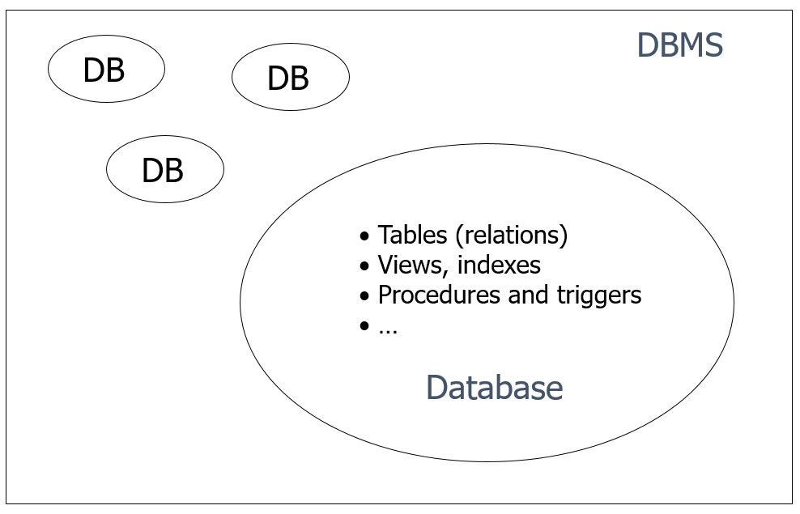
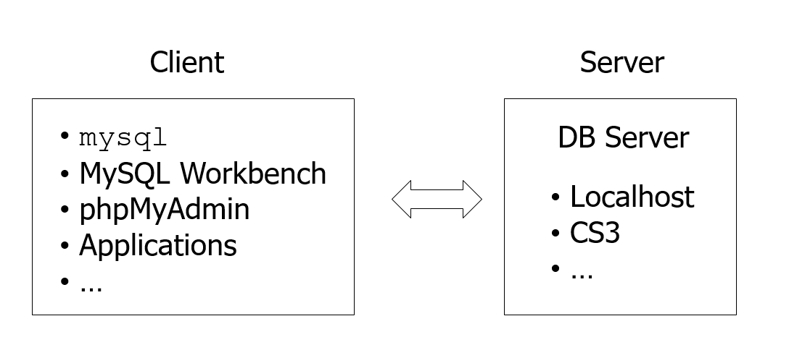

CS3220: Web and Internet Programming
Lecture 7: Using Relatiional Databases with MySQL and JDBC
Michael Hsu
CSULA
Reminder: getting the Lecture Slides and Code Examples:
git clone https://github.com/mhsu0020/CSULA-CS3220-Fall2016.git
Getting Subsequent Updates:
git pull
Why Databases
- The need to persist data
- Access data effectively and safely
- We can of course store all data in text files, and read from them as needed. But this will be very inefficient.
- A whole branch of computer science:
- How do we scale databases for billions of users around the globe?
- In financial transactions, how do we make handle multiple concurrent transactions and what value to use for the final result?
- What happens if my database server crashes, how do I recover from ongoing operations?
A Relational DB Example

Terminology
DBMS
- Database Management System (DBMS) is a software that manages databases
- Common Relational DBMS:
- Commercial – Oracle, IBM DB2, MS SQL Server, Access
- Open source – MySQL (MariaDB), PostgreSQL
Database and Schema
- A database is a collection of data managed by a DBMS
- A database contains a number of schema elements, such as tables, indexes, stored procedures, and so on

SQL
- Strucutred Query Language
- Standard query language of relational databases
- Supported by all major relational databases with some variations
SQL Scripts
- A text file contains SQL statements and comments
- Statements: select, insert, create …
- Comments
lines started with --
MySQL also supports C-style comment syntax, i.e. /* */ - Usually uses the .sql suffix
MySQL
- Very popular in web development: http://db-engines.com/en/ranking
- Bought by Oracle, many people switched to MariaDB
- Open source
- Mature tools/plugins/libraries for almost all languages

MySQL on CS3 Server
- Version 5.5
- One database per account
- DB name is the same as the server account username. E.g.
cs3220stu31 - Username and password are the same as the ones for the server account
Client-Server Architecture of MySQL
Connect to a MySQL Database
- Use either command line or MySQL Workbench
- Create a connection with the information about the server:
-
Host
Port (default 3306)
Username
Password
Database/Schema
Creating Tables
-- example syntax:
create table table_name (
field_name field_type [NOT NULL] [UNIQUE] [DEFAULT value],
field_name field_type [NOT NULL] [UNIQUE] [DEFAULT value],
…
[PRIMARY KEY(field_name, …)]
);
create table employees (
id integer auto_increment primary key,
first_name varchar(255) not null,
last_name varchar(255) not null,
address varchar(255),
supervisor_id integer references employees(id)
);
Naming Conventions
- Use plural form for table names
- Use singular form for column names
- Use underscore to concatenate multiple words, e.g. employee_id.
Do not use mixed cases in names (e.g. ArtistName) because many DBMS treat names as case-insensitive
More on CREATE TABLE
Field types
- integer, real, char(n), varchar(n)
- date, time, datetime, timestamp
Auto ID generation:
- auto_increment
Integrity constraints
- unique, not null, primary key
- foreign key
Example Database:
https://github.com/mhsu0020/CSULA-CS3220-Fall2016/blob/master/lecture7-mysql-jdbc/code/employees.sqlPopulate Tables
insert into table values (value1, value2, …);
insert into table (field, …) values (value, …);
Search for Records
select field(s) from table(s) where condition(s);
Practice problems:
- Find the name and address of employee with id=1
- Find the name of employee who leads the project Firestone
- Find the number of projects led by John Doe
- List the number of members of each project
Update Records
update table set field=value [, …]
where condition(s);
Practice problems:
- Change John Doe’s address to 123 Main St.
- Change John Doe’s name to Tom Smith
Delete Records
delete from table where condition(s);
Practice problems:
- Delete all the projects led by John Doe
- Delete all the projects
Delete Tables and Databases
Be very, very careful when deleting data.
- Delete a database:
drop database cs3220stu31; -- don’t do this! - Delete a table:
drop table projects;